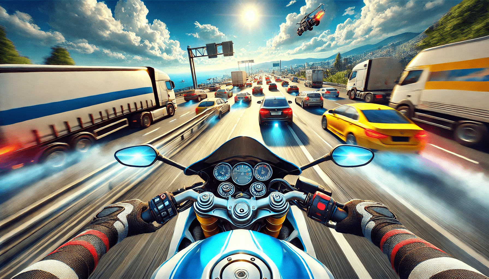

Traffic Rider APK: A Thrilling Ride to Adventure
Are you ready to hit the road, feel the wind in your hair, and experience the thrill of high-speed motorcycle racing without ever leaving your couch? Traffic Rider APK offers exactly that. This adrenaline-pumping game has taken the mobile gaming world by storm, and it's no surprise why. With its realistic graphics, immersive gameplay, and straightforward controls, Traffic Rider is not just a game—it’s an experience.
What is Traffic Rider APK?
For those who are new to the gaming world, Traffic Rider is a first-person motorbike racing game that takes you on a journey through various environments and traffic conditions. The Traffic Rider APK version allows you to enjoy the game on Android devices for free. What sets this game apart from others is its focus on realistic gameplay. This isn’t just about dodging cars; it’s about mastering the art of riding a motorbike in high-pressure situations.
Whether you're someone who dreams of owning a superbike or just a casual gamer looking for a fun way to pass the time, Traffic Rider APK delivers on all fronts.
Why Traffic Rider APK is Worth the Download
1. Stunning Graphics that Make You Feel Alive
The first thing you’ll notice when you fire up Traffic Rider is the jaw-dropping graphics. The developers have gone the extra mile to make every detail pop. From the glimmering headlights of your bike to the subtle shifts in weather as you race through different locations, the visuals are nothing short of spectacular.
It’s so realistic that you might find yourself instinctively leaning left or right to avoid a car on the road!
2. Immersive Sound Effects
If the visuals don’t pull you in, the sound effects will. The roar of the engine, the honking of cars, and the subtle sound of tires on the road all come together to create a truly immersive experience.
3. Simple Controls, Endless Fun
Unlike some games that feel like you need a pilot’s license just to navigate the menu, Traffic Rider keeps things refreshingly simple. The controls are intuitive, with options for tilt or touch, depending on your preference.
Features That Will Keep You Hooked
1. Career Mode with Missions
Traffic Rider isn’t just about endless riding; it offers a career mode packed with missions to keep you engaged. Completing these missions not only boosts your in-game stats but also gives you the satisfaction of ticking something off your digital to-do list.
2. Wide Range of Bikes
From sleek superbikes to rugged cruisers, Traffic Rider offers a wide variety of motorcycles to choose from. Each bike has its unique stats and feel, making the game even more engaging.
3. Customizable Settings
Not everyone plays games the same way, and the developers of Traffic Rider get that. The game allows you to adjust settings to match your style. Prefer tilt controls over touch? No problem. Want to tweak the sensitivity? You got it.
What Makes Traffic Rider Stand Out?
- Realism: The game captures the essence of riding a motorbike with an attention to detail that’s rare in mobile games.
- Replay Value: With so many missions, bikes, and achievements to unlock, you’ll never run out of things to do.
- Accessibility: Traffic Rider APK makes the game free to download and easy to play on most Android devices.
Tips to Master Traffic Rider
- Start Slow: Don’t rush into the fastest bike right away. Get a feel for the game with the beginner models first.
- Use the Brakes: As tempting as it is to go full speed, don’t forget about those brakes. They’re there for a reason.
- Upgrade Wisely: Spend your in-game earnings on upgrades that truly matter, like engine power and handling.
Humor on the Highway
Playing Traffic Rider isn’t all seriousness. There’s plenty of room for fun—and maybe a few laughs. For instance, have you ever tried to see how long you can go without crashing, only to be taken out by a rogue van? It’s frustrating but also oddly hilarious.
Or how about the moments when you’re going full throttle, feeling invincible, and then BAM—a random car appears out of nowhere. It’s the kind of experience that makes you want to throw your phone, but also laugh at your own overconfidence.
Who is Traffic Rider For?
The beauty of Traffic Rider lies in its universal appeal. Whether you’re a speed junkie who loves the thrill of racing or someone who just wants a casual game to unwind, Traffic Rider has something for everyone.
Parents, don’t worry—this game is completely safe for kids. There’s no violence, just good old-fashioned fun. And hey, it might even teach them a thing or two about road safety (like the importance of not texting while riding!).
Final Thoughts: Why Traffic Rider APK is a Must-Try
Traffic Rider APK isn’t just another racing game. It’s a masterpiece of mobile gaming that combines stunning visuals, realistic gameplay, and endless fun. Whether you’re looking for a quick escape or a long-term gaming commitment, this game delivers on all fronts.
So, what are you waiting for? Download Traffic Rider APK today, rev up that virtual engine, and get ready to hit the road. Just remember to keep your eyes on the screen, not the road outside your window!
Happy riding! 🏍️